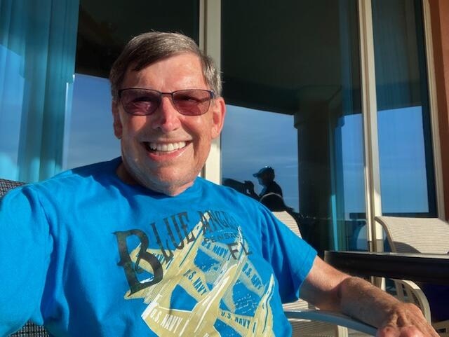

HRBreaking Free is told by a grandfather sharing a long-kept story with his seven-year-old grandson on a rainy day. In November 1938, Herschel, a Jewish doctor in Freiburg, Germany, is ordered to a ghetto clinic, and his director urges him to take his wife, Sophia, and flee the country at once. Carrying a secret she has yet to share, Sophia joins Herschel on a dangerous journey through the Black Forest, where they are joined by fellow refugees Misha, Goldie, and their granddaughter, Sarah.
With help from brave strangers, a mountaineer named Herr Strup, and his remarkable rescue dog, Prinz, the group attempts a treacherous climb over the snowy mountains into Switzerland as German soldiers close in. When Herschel is wounded just short of safety, Prinz and fighters from the refugee camp rescue him, and the survivors finally find freedom. Based on true events, the story is a moving testament to courage, faith, and the will to live, ending with a quiet revelation that ties the past to the grandfather telling the tale.
I taught a Holocaust course to eleventh graders for thirty years and invited Holocaust survivors to speak to my class. One survivor friend, who was Dutch, had a friend from her hometown who was living in Freiburg, Germany, in 1938. He was a doctor, and when the Nazis invaded, he escaped to the British West Indies, where they later reunited. He told her the story of his escape, which she retold to me many years later. By that time, he had passed away.
In 2000, I attended the Second Annual Gathering of Holocaust Survivors and tried to tell the story to the Shoah Project. Since I was neither the survivor nor a child of the survivor, I was not able to participate. I did not want the story to go untold, so I researched it for fifteen years and initially wrote a movie script. After five years of having options on the script expire, I decided to write the book. Throughout this time, I continued to practice law in Houston, Texas, for fifty years.
“My inspiration for writing the book was the desire to have this story told. I felt that these experiences and the message behind them were important and deserved to be shared. Most of all, I wanted readers to connect with the story and find meaning in it.”
— Henry Radoff, on his inspiration for writing the bookIn my work, I often explore how hope and faith give ordinary people the strength to survive extraordinary darkness. In Breaking Free, Herschel and Sophia lose their home, their safety, and Herschel's position at the university in Freiburg in 1938, yet they choose to move toward freedom rather than surrender to fear. Their faith is tested in the forest, at the foot of a mountain they don't know how to climb, and under the guns of German soldiers, and even in hiding, little Sarah prays and asks God to bless everyone who helped them. Hope comes through unexpected sources, such as strangers who risk their lives and a loyal rescue dog named Prinz who guides them over the mountain and ultimately saves Herschel. As the book's opening declares, they survived because the will to live burns greater than the fire around them, and that is the message I hope every reader carries away.
I want my readers to walk alongside Herschel, Sophia, and their companions, feeling the cold of the mountain, the fear of the soldiers close behind, and the exhaustion of every step toward the Swiss border. Through their hardship, I hope readers see how faith and hope kept these survivors going when everything else had been taken from them. Just as the grandfather in the story finally shares the whole journey with his grandson, I want readers to understand why these memories must be passed on. My goal is for every reader to close the book not only moved by their fight for freedom, but inspired to help tell the world what happened so it is never forgotten.
Reading and doing research are my hobbies, and practicing law has deepened both, since it involves studying the history of statutes and ordinances and how they are interpreted. That experience helps bring my storytelling to life. I find pleasure in writing about positive outcomes in a negative world, and I write so that the reader can experience what my characters are feeling and observing. Even when I teach, I teach through stories.
I've published six books. Taking Chancey and Chancey's Overture are humorous books about our dog, Chancey, telling how we got him and what he experienced through his own eyes. Breaking Free is my Holocaust book. Where the Squirrels Run is a journal I kept during the pandemic, covering more than four hundred days. I wrote it so that anyone doing research twenty years from now would have a source about the pandemic other than medical and legal books. Paradise 62 is inspired by the senior apartment complex where we live in Sugar Land, Texas, and is a work of fiction based on true events. My latest book, Solo 50, is about my life practicing law as a solo attorney with only one secretary and the major cases I was involved in.
A humorous book about our dog, Chancey, telling how we got him.
A humorous book about our dog, Chancey, told through his own eyes.
My Holocaust book.
A journal I kept during the pandemic, covering more than four hundred days.
Inspired by the senior apartment complex where we live in Sugar Land, Texas; a work of fiction based on true events.
About my life practicing law as a solo attorney with only one secretary, and the major cases I was involved in.
I am busy at in many projects. In the apartment complex I am referred to as the mayor since my wife Marla are among the first residents and can assist when asked.
I am currently based in Sugar Land, Texas, and Pensacola, Florida.